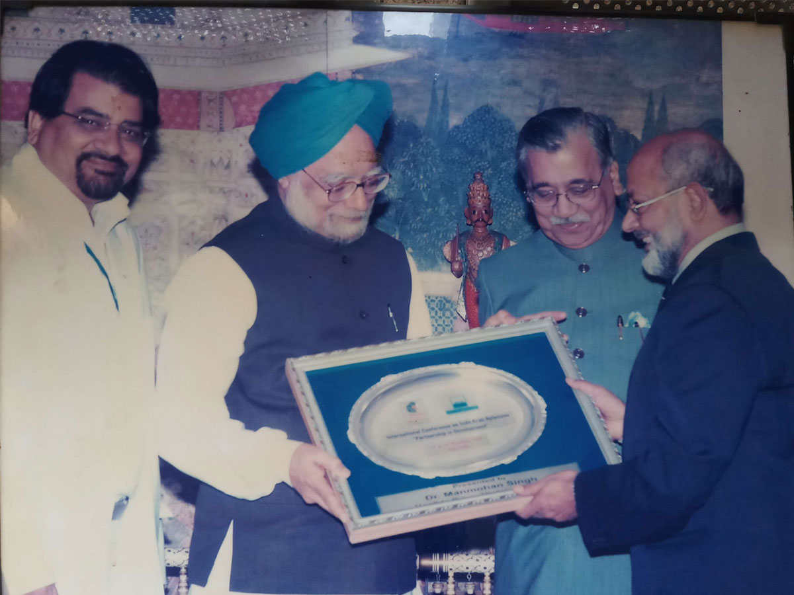
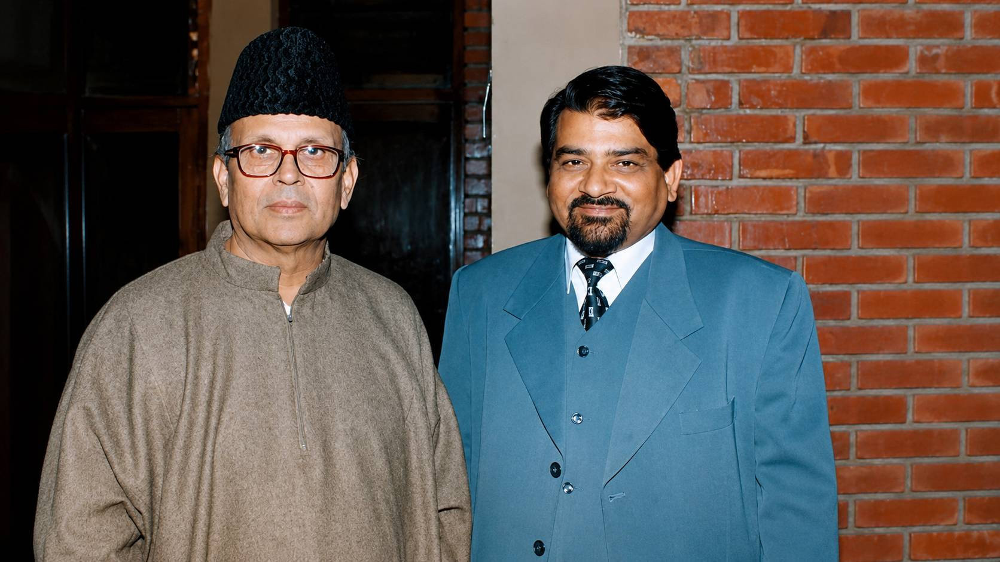
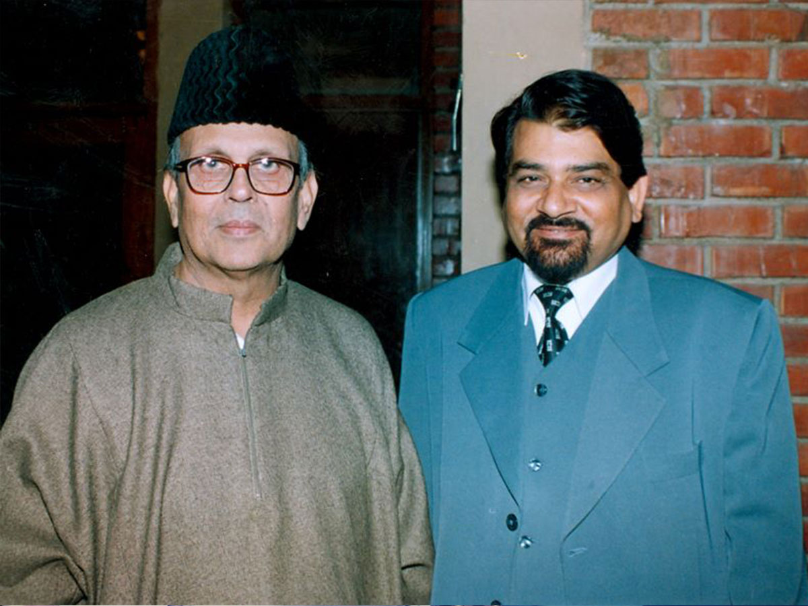
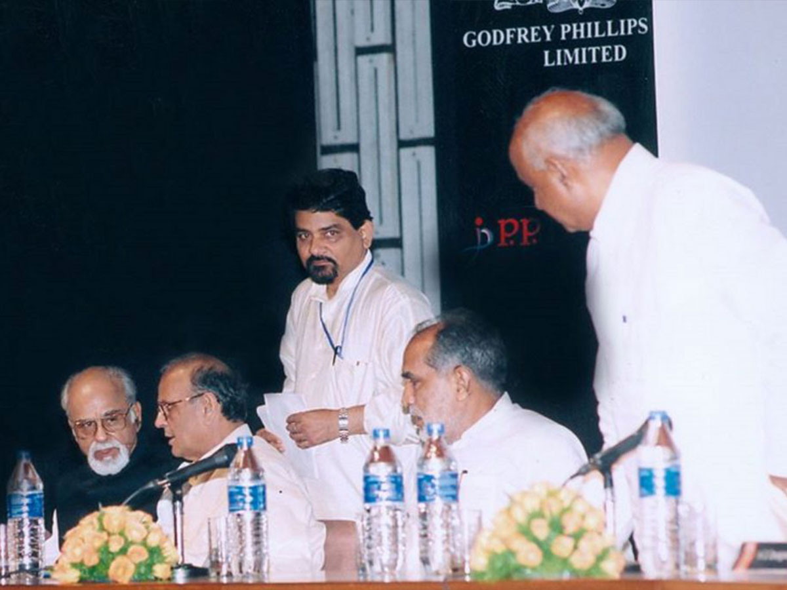
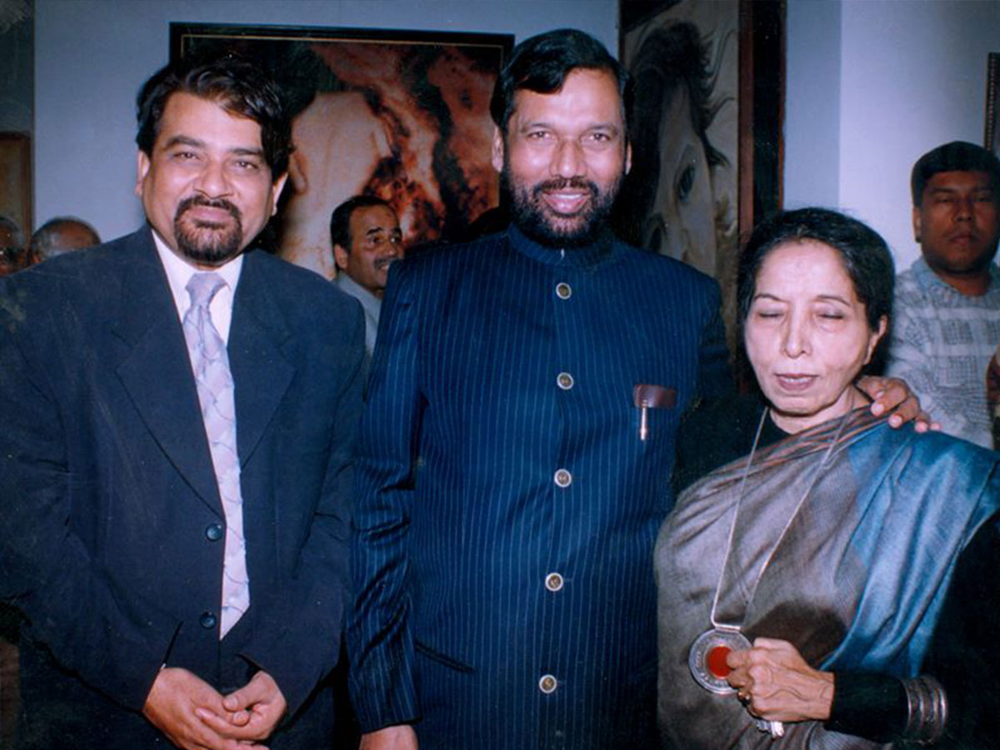
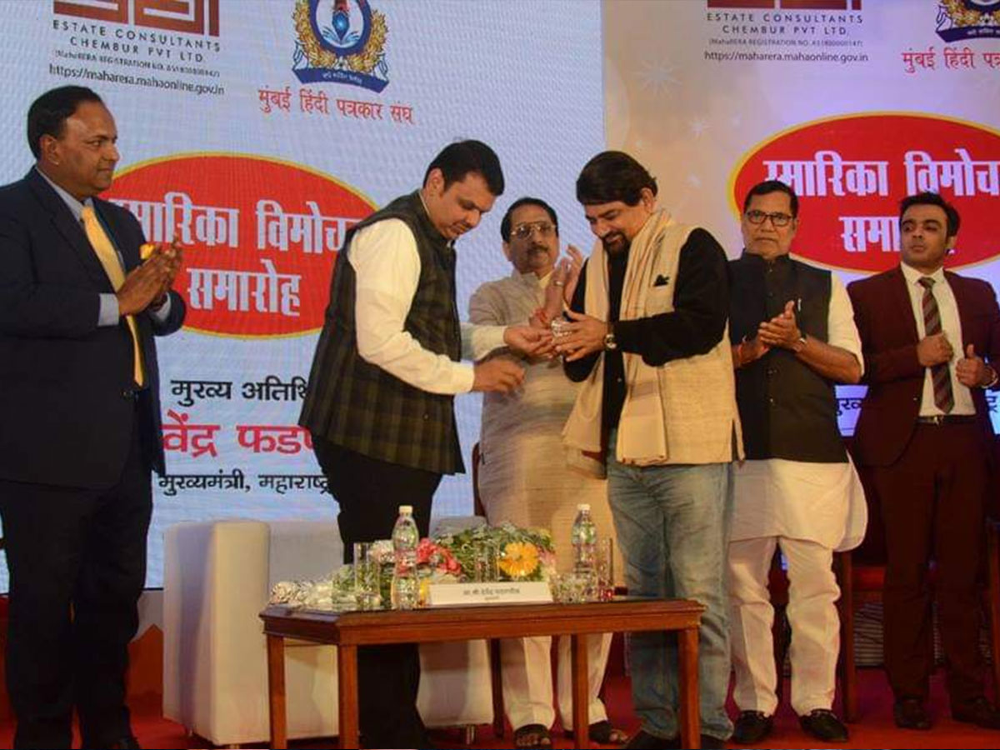
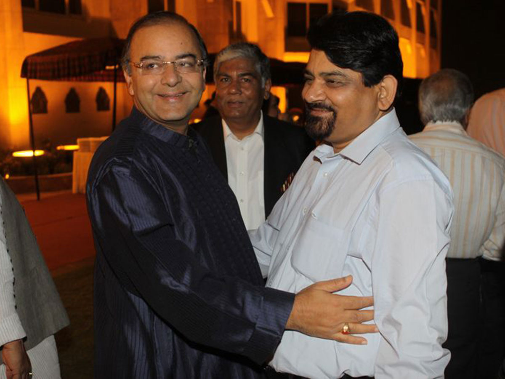
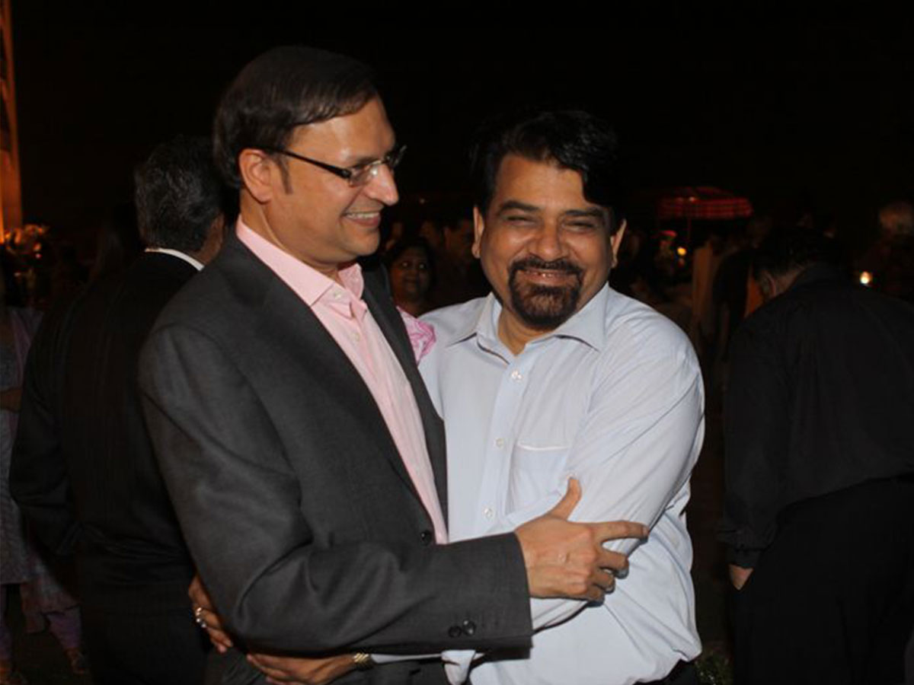
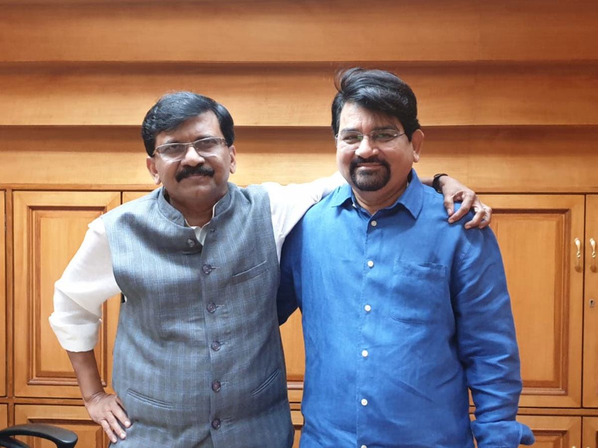

Historic Moment
Santosh Bhartiya with Dr. Manmohan Singh
A historic moment with former Prime Minister Dr. Manmohan Singh
Four decades of fearless journalism, public service, and a lifelong commitment to truth, democracy, and independent thinking.

Rare photographs capturing memorable meetings with India's Prime Ministers, Presidents and national leaders over four decades of journalism.

A historic moment with former Prime Minister Dr. Manmohan Singh

A historic interaction with former
Prime Minister V. P. Singh.

A historic moment with former Prime Minister I. K. Gujral

A historic moment with former Union Minister Ram Vilas Paswan

A memorable moment at a commemorative publication launch
Mumbai

A memorable interaction with former Union Minister
Arun Jaitley

A memorable interaction with journalist and India TV Chairman
Rajat Sharma

A memorable interaction with Rajya Sabha MP
Sanjay Raut
For over four decades, Santosh Bhartiya has championed fearless journalism, independent thought, and democratic values as a journalist, author, and former Member of Parliament dedicated to public service.
Read More About MeSubscribe to receive the latest articles, reports and exclusive updates.